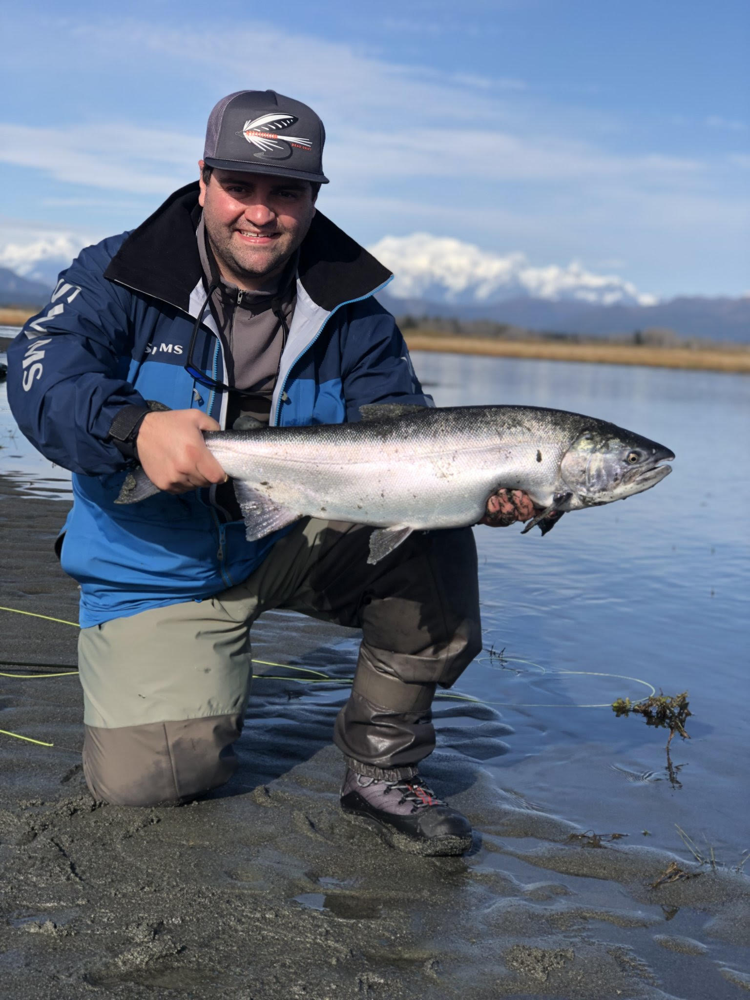

Joshua T Durrant | WDD 130
Hello! My name is Joshua Durrant, but most people call me Josh. Honestly people only call me Joshua If I am in trouble. I love my family! I am happily married and my wife and I have 5 kids. Everyday is adventure, but we love every second of it! If you can't tell by my picture one of my favorite activites is fishing. This picture is from a trip I took to South East Alaska. We fished for Silver Salmon. I have been fishing all over Utah and Arizona, and also back east in New York. Idaho is up next on my fishing trip list. I also love to go camping. I have a 4 year old son who is finally ready to go camping with me. That is also on the to-do list for this next summer. I love to be out doors and exploring the beautiful earth our Heavenly Father Created for us. While I have a love of the outdoors; I am also a total nerd, and I love it. I enjoy building computers, playing video games and reading fantasy books. That sparked my interest in taking a class like this, and while this programming stuff is new to me, I am very excited to face a new challenge.